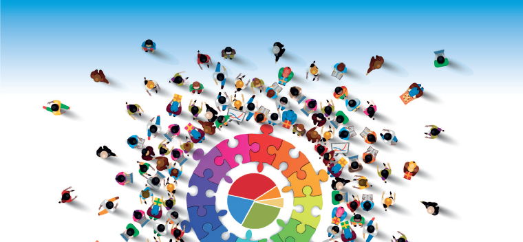

Je m’appelle Mawa DIAW et je suis étudiant en troisième
année de licence en Géographie et Aménagement du territoire à l’Université
d’Avignon et des pays du Vaucluse. Etant de nationalité Sénégalaise, je suis
venu cette année en France dans le cadre de la poursuite de mes études.
Passionné de la géomatique, mon cursus au Sénégal a été beaucoup plus théorique que
pratique vis-à-vis de la manipulation des données géographiques. Cette année,
dans le cadre du cours Système d’Information Géographique (SIG) dispensé par M.
Mounir REDJIMI, j’ai eu à découvrir le logiciel Tableau public qui permet une
visualisation et une meilleure compréhension des données géographiques. Dans le
cadre de ce projet, nous allons essayer de travailler sur les migrations
internationales.
Les données utilisées dans ce projet proviennent principalement des sites de l'ONU, du HCR, de l'IDMC, du Frontex, de l'OIM et de la banque mondiale.
Le monde est profondément transformé par les mobilités. Selon la définition de l’ONU, un migrant est une personne née dans un pays et qui vit dans un autre pays pour une durée supérieure à un an, quelles qu’en soient les raisons." Donc il peut être appréhendé comme étant le déplacement de personnes d'un lieu dans un autre, en particulier d'un pays (émigration) dans un autre (immigration) pour des raisons politiques, sociales, économiques ou personnelles, et qui est le fait soit d'une population entière, soit d'individus s'intégrant dans un phénomène de société plus large. Les phénomènes migratoires ont pris de l'ampleur ces dernières années dans notre société . C'est la raison pour laquelle nous avons choisi de travailler sur ce sujet pour en avoir une meilleure compréhension. Notre travail sera structuré en quatre (4) parties où nous essayerons d'étudier les migrations internationales sur tous ses aspects.

3. Les mouvements migratoires
Le nombre
de migrants internationaux a connu une augmentation fulgurante. Il a quasiment
doublé ces dernières années en passant de plus de 153 millions à 271.6 millions
entre 1990 et 2020. Les flux migratoires représentent des enjeux très
diversifiés (politiques, économiques, géopolitiques, sociaux), tant pour les
pays de départs que pour les pays d’arrivés. En 2020, plus de la moitié des
migrants sont localisés en Europe et en Amérique du Nord. En effet, les
Etats-Unis d’Amérique sont le premier pays de destination des migrants depuis
1990. Depuis lors, le nombre de personnes nées à l’étranger résidant dans ce
pays a presque doublé passant de 23 millions en 1990 à près de 51 millions en
2020. L’Allemagne, deuxième destination des migrants a aussi connu une
augmentation au fil des ans passant de moins de 6 millions en 1990 à plus de 13
millions en 2020. En plus de ces deux pays susmentionnés, les principales
destinations des migrants sont des pays développés comme la France (la
cinquième destination des migrants), la Fédération de Russie et l’Arabie
Saoudite.
created with
Website Builder Software .